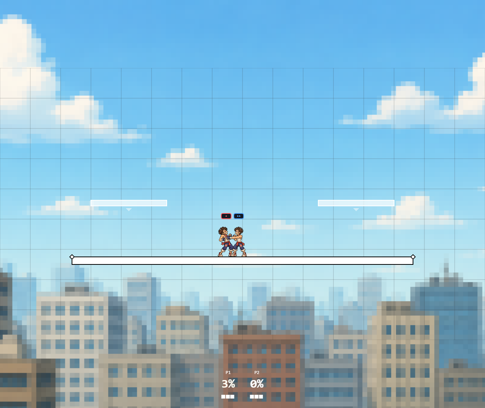

Body hitlag and digital victim SDI are connected. Full Ultimate parity remains incomplete.
Implementation and gaps · Validation · 96 numeric cases
Body hitlag uses floor((damage × .65 × player factor + 6) × electric × move multiplier × crouch), capped at 30. Independent numeric cases match the calculator author implementation; this is research-source agreement, not official version certification. Legacy zero-hitlag metadata still opts out unless an explicit multiplier overrides it.
96 formula cases; nine focused pure hitstop and eight authoritative server checks. All 49 review/local browser checks and separate four-client regression passed. Type checks, production build and fourteen-page production sprite smoke passed without request or page errors.

Real local contact fixture extends confirmed hitlag to 30 ticks for deterministic sampling; it does not establish a normal 30-tick jab.
SDI distance 3 world units, cooldown 4 ticks and opt-in ASDI exit distance 2 world units are explicit project tuning. The supported ASDI effect catalog is not certified; ordinary roster attacks are not automatically opted in.
Calculator formulas and caller establish body-hitlag math. Prima distinguishes hitstop shuffling from launch DI; training-mod code exposes directional hitstop input. Neither establishes this project’s digital distances or exact cooldown.
packages/engine/src/hitbox/hitlag.tspackages/engine/src/fsm/hitstop.tspackages/engine/src/hitbox/index.tspackages/engine/src/fsm/FSMController.tsapps/server/src/GameEngine.tspackages/shared/src/types/GameState.ts